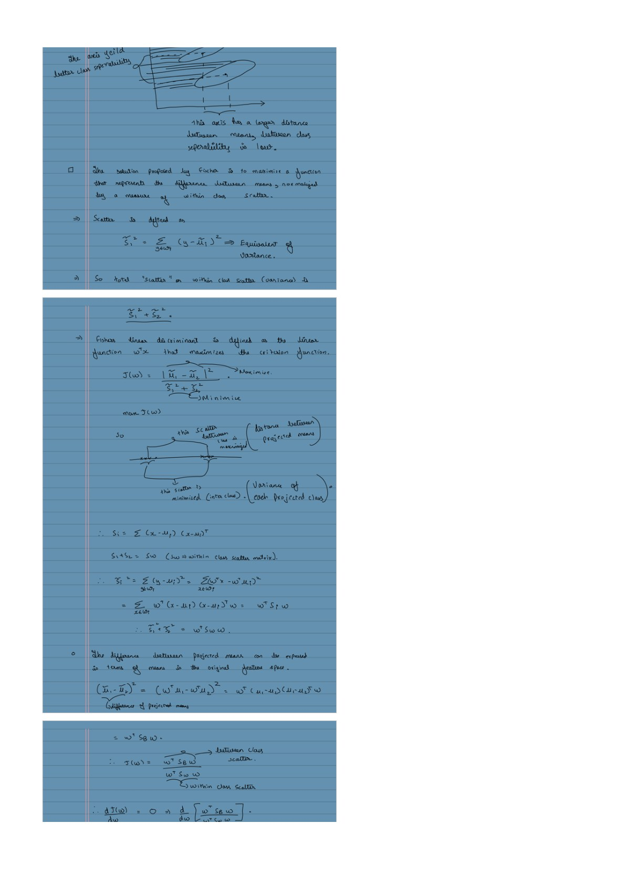

Fisher LDA: Find a Projection That Separates Classes
Expanded from PCA and LDA.pdf · View a handwritten page
PCA keeps directions with a lot of overall spread. Fisher's linear discriminant analysis (LDA) asks a different question: on which line are the class averages far apart compared with the spread inside each class? It uses the labels to answer that question. We will build the matrices from ten points, derive the best direction, and check the result. A projection can help separate classes, but it does not guarantee that they stop overlapping.
Start with the labeled points in the notes
Each point belongs to class A or B. LDA uses those labels while it chooses a direction. Here are the ten points listed on page 4 of the original notes:
| Row | Class | $x_1$ | $x_2$ |
|---|---|---|---|
| A1 | A | 4 | 1 |
| A2 | A | 2 | 4 |
| A3 | A | 2 | 3 |
| A4 | A | 3 | 6 |
| A5 | A | 4 | 4 |
| B1 | B | 9 | 10 |
| B2 | B | 6 | 8 |
| B3 | B | 9 | 5 |
| B4 | B | 8 | 7 |
| B5 | B | 10 | 8 |
Average the measurements within each class. For A, the averages are $\mu_A=((4+2+2+3+4)/5,(1+4+3+6+4)/5)=(3,3.6)$. Doing the same for B gives $\mu_B=(8.4,7.6)$. The centers differ by $(5.4,4)$. A line along that gap would put the averages far apart, but it might also spread points from the same class far apart. LDA accounts for both.

Build the within-class scatter matrices
Each point $x_i$ is a column of measurements. A class's mean $\mu_c$ is the column of its average measurements. Subtract the mean of the point's own class to get its residual, $r_i=x_i-\mu_c$: the difference from the average in each measurement.
| Symbol | What it measures |
|---|---|
| $S_A$ | Spread of class A points around A's mean. |
| $S_B$ | Spread of class B points around B's mean. |
| $S_W=S_A+S_B$ | Total spread inside the two classes. W means “within.” |
| $S_{\mathrm{between}}$ | Spread of class means around the overall mean; defined in the multiclass section. |
Here B is the name of our second class, so $S_B$ measures spread inside class B, not the gap between classes. We write the between-class matrix as $S_{\mathrm{between}}$ to keep the meanings separate.
For any class $c$, add its residual outer products to form its scatter matrix:
This is a $d\times d$ matrix when each point has $d$ measurements. It records relationships between measurements, not between rows. Using each point's own class mean keeps the gap between classes out of this within-class measure.
In code, stack the residuals as rows of a matrix $R_c$. Then $S_c=R_c^\top R_c$: its entry $(j,k)$ adds the products $r_{ij}r_{ik}$ across the class. This is why the worked Python example uses Ac.T @ Ac and Bc.T @ Bc.
With two measurements, write a residual as the column vector $r_i=(r_{i1},r_{i2})^\top$. Multiply it by its row version to get that point's contribution to the scatter matrix:
The diagonal stores each squared difference. The off-diagonal stores the product of the two differences: it is positive when they have the same sign and negative when they have opposite signs. For A1, $\mu_A=(3,3.6)$ and $x_{A1}=(4,1)$, so $r_{A1}=(1,-2.6)$ and:
Repeat this for each class A point. The table lists the residual and the three distinct entries in its matrix contribution:
| Point | Residual $(r_1,r_2)$ | $r_1^2$ | $r_1r_2$ | $r_2^2$ |
|---|---|---|---|---|
| A1 | (1, −2.6) | 1 | −2.6 | 6.76 |
| A2 | (−1, 0.4) | 1 | −0.4 | 0.16 |
| A3 | (−1, −0.6) | 1 | 0.6 | 0.36 |
| A4 | (0, 2.4) | 0 | 0 | 5.76 |
| A5 | (1, 0.4) | 1 | 0.4 | 0.16 |
| Sum | 4 | −2 | 13.2 | |
Summing the three numeric columns gives $4$, $-2$, and $13.2$. Put those sums on the diagonal and in both off-diagonal positions to get class A's scatter matrix:
Now repeat the same steps using class B's mean, $\mu_B=(8.4,7.6)$:
| Point | Residual $(r_1,r_2)$ | $r_1^2$ | $r_1r_2$ | $r_2^2$ |
|---|---|---|---|---|
| B1 | (0.6, 2.4) | 0.36 | 1.44 | 5.76 |
| B2 | (−2.4, 0.4) | 5.76 | −0.96 | 0.16 |
| B3 | (0.6, −2.6) | 0.36 | −1.56 | 6.76 |
| B4 | (−0.4, −0.6) | 0.16 | 0.24 | 0.36 |
| B5 | (1.6, 0.4) | 2.56 | 0.64 | 0.16 |
| Sum | 9.2 | −0.2 | 13.2 | |
These columns sum to $9.2$, $-0.2$, and $13.2$, giving class B's scatter matrix:
$S_A$ measures spread inside A; $S_B$ measures spread inside B. Add them to get the total within-class scatter, $S_W$:
Each entry is an ordinary sum: $13.2=4+9.2$, $-2.2=-2-0.2$, and $26.4=13.2+13.2$. A negative off-diagonal entry is valid; it comes from opposite-sign residual products, not negative squared spread.
Scatter is a raw sum, not a covariance average. For example, A's sample covariance is $S_A/(5-1)$. We use the unnormalized $S_W$ in Fisher's criterion below. Dividing the whole matrix by one common positive number changes the criterion's value but not its best direction. Separately averaging classes with different sizes would change their relative weight.
Derive Fisher's separation score
Let $w$ be a column of feature weights. A point gets one score, $z_i=w^\top x_i$. For two measurements, that means $z_i=w_1x_{i1}+w_2x_{i2}$. Averaging these scores within class $c$ gives:
Here $n_c$ is the number of points in class $c$. Define the mean-gap vector $g=\mu_B-\mu_A$. The gap between the two average scores is:
For point $i$, let $y_i$ be its class label. Its score's difference from its own class average is $z_i-\bar z_{y_i}=w^\top(x_i-\mu_{y_i})=w^\top r_i$. Square these differences and add them:
So Fisher's criterion is the squared gap between class averages divided by their total within-class spread:
A large numerator means the projected class averages are far apart; a small denominator means points stay close to their own class averages. Multiplying $w$ by a nonzero scalar leaves the ratio unchanged. This score is not a probability or a prediction accuracy.
Derive the best direction with gradients
For the inverse formula, assume $S_W$ is positive definite: $w^\top S_Ww>0$ for every nonzero $w$. This ensures every direction has positive within-class spread and the matrix can be inverted. Also assume the class means differ, so $g\ne0$. Our example meets both conditions.
Because rescaling $w$ does not change $J(w)$, choose a convenient scale: $w^\top S_Ww=1$. The problem becomes:
The mean gap is $w^\top g=\sum_j w_jg_j$, whose gradient with respect to the weights is $g$. Squaring it gives gradient $2g(g^\top w)$ by the chain rule. The denominator has gradient $2S_Ww$ because $S_W$ is symmetric. You can check that rule directly in our two-measurement example:
The gradient is the column of partial derivatives with respect to the weights. To include the constraint, introduce a Lagrange multiplier $\lambda$ and set both derivatives of the Lagrangian to zero:
Divide the gradient equation by 2:
This is a generalized eigenvector equation. Multiplying by $w^\top$ gives $\lambda=(w^\top g)^2$ under our constraint, so $\lambda$ is the Fisher score at that stationary direction. A direction with $g^\top w=0$ has score 0. Since the class means differ, the maximum is positive; for that solution, $\lambda>0$ and:
We have found a candidate direction. We still need to show that it gives the maximum, rather than just a stationary point.
Why this direction really gives the maximum
Let $u=S_W^{-1}g$ and $a=g^\top u$. Since $g=S_Wu$, we have $a=u^\top S_Wu>0$. For any nonzero $w$, set $t=(w^\top g)/a$. The quadratic expression for $w-tu$ cannot be negative. Expanding it gives:
Rearranging gives an upper bound on every direction's score:
Equality holds when $w$ is proportional to $u$. So the gradient-derived direction reaches the upper bound and is a global maximum. Its sign and scale are arbitrary; reversing it only reverses the ordering of the scores.
Solve and check the direction for our points
For our points, the total within-class scatter is $S_W=\begin{bmatrix}13.2&-2.2\\-2.2&26.4\end{bmatrix}$ and the mean gap is $g=(5.4,4)^\top$. Find $u=S_W^{-1}g$ by solving a linear system instead of forming an inverse:
That matrix equation is just these two scalar equations:
The solution is $u\approx(0.440461,0.188220)^\top$. It points in the right direction, but it is not scaled to the constraint used in the proof. That scale would be $w=u/\sqrt{g^\top u}$, giving $w^\top S_Ww=1$. For plotting, use ordinary unit length instead:
These normalizations give the same direction and Fisher score. A point's plotted score is $z=v^\top x=0.919559x_1+0.392951x_2$. For A1, that is approximately $0.919559(4)+0.392951(1)=4.0712$.
On this line, class A's average score is about 4.1733 and class B's is about 10.7107. The direction separates the averages while accounting for how widely points spread within each class.
| Candidate direction | Fisher score $J$ |
|---|---|
| First measurement only: $(1,0)$ | 2.2091 |
| Second measurement only: $(0,1)$ | 0.6061 |
| Mean gap: $(5.4,4)$ | 2.8633 |
| Fisher direction: $v$ above | 3.1314 |
The best score is $g^\top u\approx3.131370$, exactly the upper bound we derived. Pointing directly from one class mean to the other gives a smaller score because it does not adjust for within-class spread.
Plotting all ten scores makes that separation easier to see:

import numpy as np
A = np.array([[4,1], [2,4], [2,3], [3,6], [4,4]], dtype=float)
B = np.array([[9,10], [6,8], [9,5], [8,7], [10,8]], dtype=float)
ma, mb = A.mean(0), B.mean(0)
Ac, Bc = A-ma, B-mb
scatter_a = Ac.T @ Ac
scatter_b = Bc.T @ Bc
within = scatter_a + scatter_b
gap = mb - ma
u = np.linalg.solve(within, gap)
v = u / np.linalg.norm(u)
print(scatter_a) # [[4, -2], [-2, 13.2]]
print(scatter_b) # [[9.2, -0.2], [-0.2, 13.2]]
print(within) # [[13.2, -2.2], [-2.2, 26.4]]
print(v) # [0.91955932, 0.39295122]
print(gap @ u) # maximum Fisher score: 3.1313700384Generalize the same idea to several classes
With $C$ classes, keep two separate measures: spread inside each class and spread of the class averages. Let class $c$ have $n_c$ points and mean $\mu_c$, with $n=\sum_c n_c$ total points. The overall mean is:
Add all class scatter matrices for $S_W$. For $S_{\mathrm{between}}$, compare each class mean with the overall mean and weight it by the class's size:
For two classes, this definition simplifies to $S_{\mathrm{between}}=(n_An_B/n)gg^\top$. In our example it is $2.5gg^\top$, or $\begin{bmatrix}72.9&54\\54&40\end{bmatrix}$. This is different from class B's scatter $S_B$. The factor 2.5 scales the binary Fisher criterion but does not change its best direction.
For multiple classes, maximize the ratio $R(w)=w^\top S_{\mathrm{between}}w/(w^\top S_Ww)$. With positive-definite $S_W$, normalize the denominator to 1 and differentiate:
Choose directions with the largest generalized eigenvalues. For several components, they can be chosen to satisfy $w_i^\top S_Ww_j=0$ for $i\ne j$. That means they are perpendicular under the within-class spread measure, but need not make a right angle in the ordinary geometric sense. PCA's axes are perpendicular in the input coordinates used for fitting.
The same equation can be written $(S_W^{-1}S_{\mathrm{between}})w=\lambda w$. This is useful algebraically, but $S_W^{-1}S_{\mathrm{between}}$ is not generally symmetric. In numerical code, solve the symmetric generalized eigenproblem directly rather than forming that inverse product and passing it to an ordinary symmetric eigensolver.
Why at most $C-1$ directions? The class-mean offsets obey $\sum_c n_c(\mu_c-\mu)=0$, so they cannot all be independent. Their span has at most $C-1$ dimensions. With $d$ input measurements, the number of positive between-class directions is therefore at most $\min(d,C-1)$, and it can be smaller. Two classes give at most one.
What this projection does and does not give us
Fisher's calculation itself does not require Gaussian data or equal class covariance matrices. It uses the observed means and within-class scatter. If the class means coincide, $g=0$ and the binary numerator is zero in every direction with positive denominator. A useful curved or multimodal pattern can therefore be missed.
If $S_W$ is singular, it cannot be inverted; some nonzero directions can have zero within-class spread. The derivation above then does not apply. One option is to replace it with $S_W+\alpha I$, where $\alpha>0$ and $I$ is the identity matrix. This regularizes the calculation, but also changes the criterion and potentially the direction. Choose that setting using training/validation data rather than hiding the singular case.
Fit preprocessing and the direction on training data, then apply the saved weights to new points. A projection supplies a score, not a label or a probability. The LDA classifier guide adds a Gaussian model with shared covariance to derive a classification threshold, class priors, and probabilities.
From the handwritten notes
This guide expands the relevant material in PCA and LDA.pdf. The complete original contains both topics; the blog treats PCA, LDA projection, and LDA classification separately.
View original page 3


Further reading: